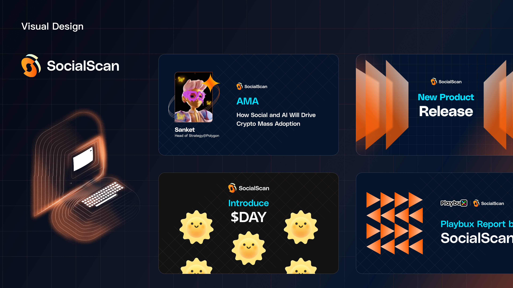
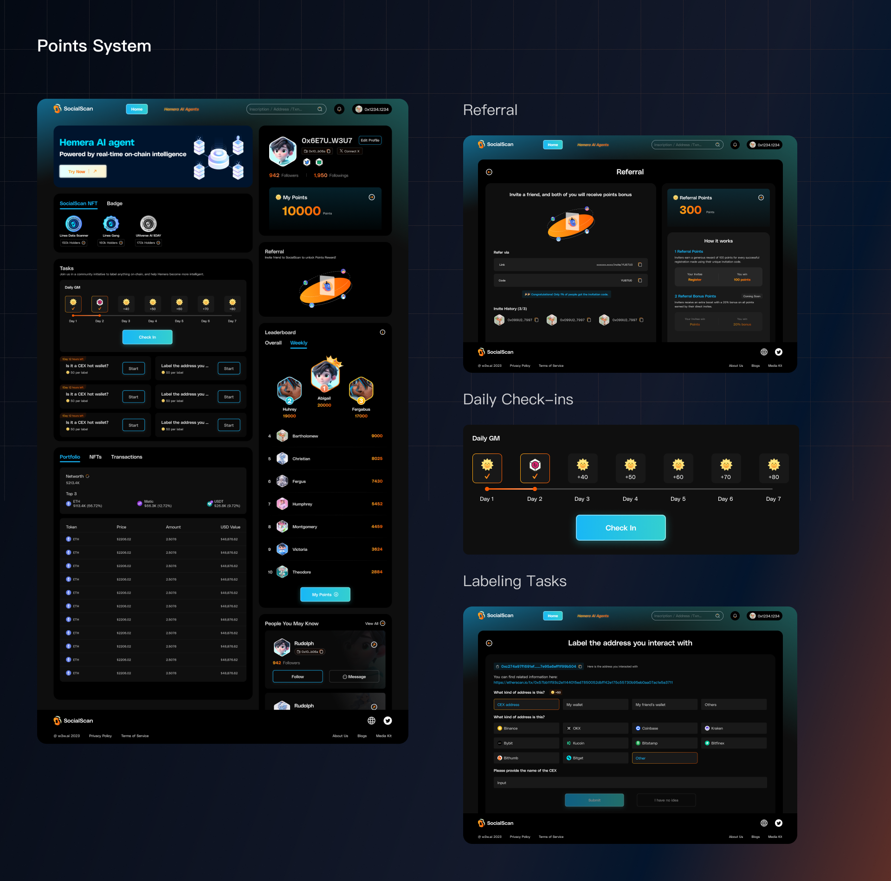
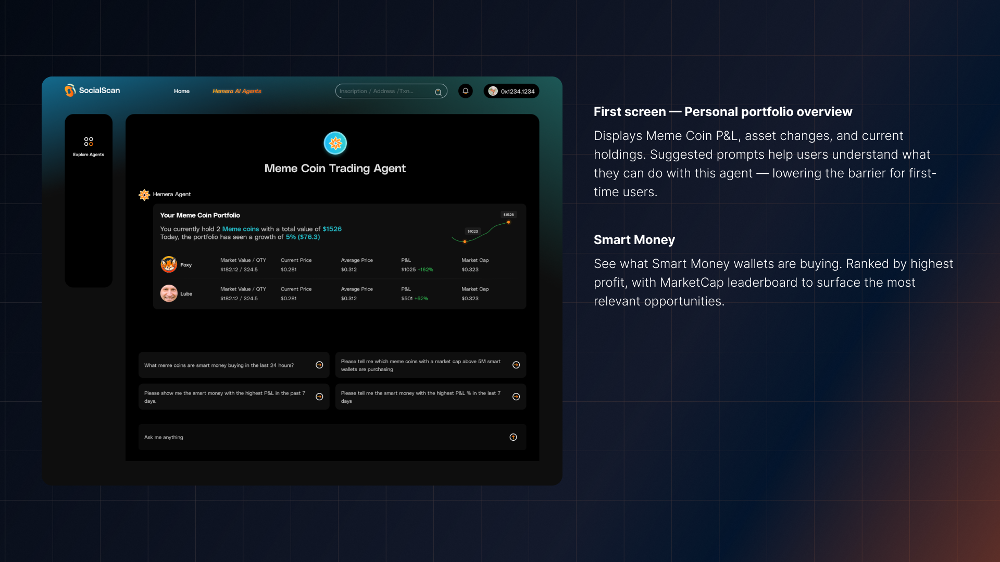
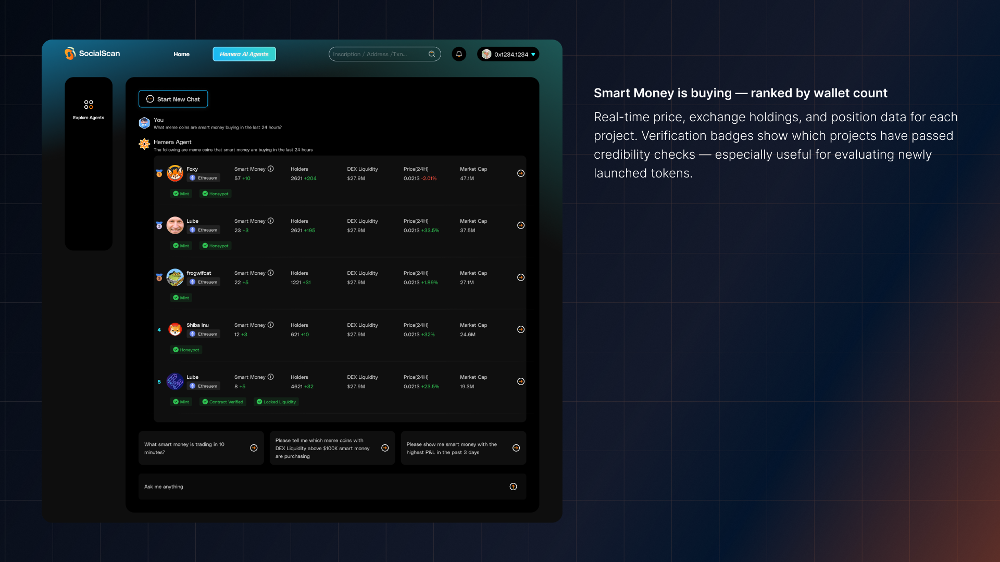
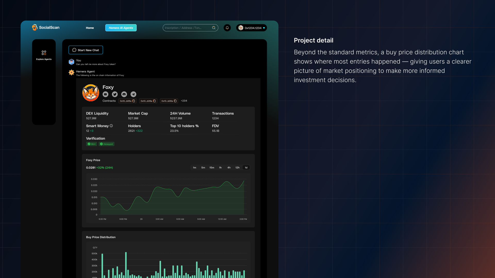
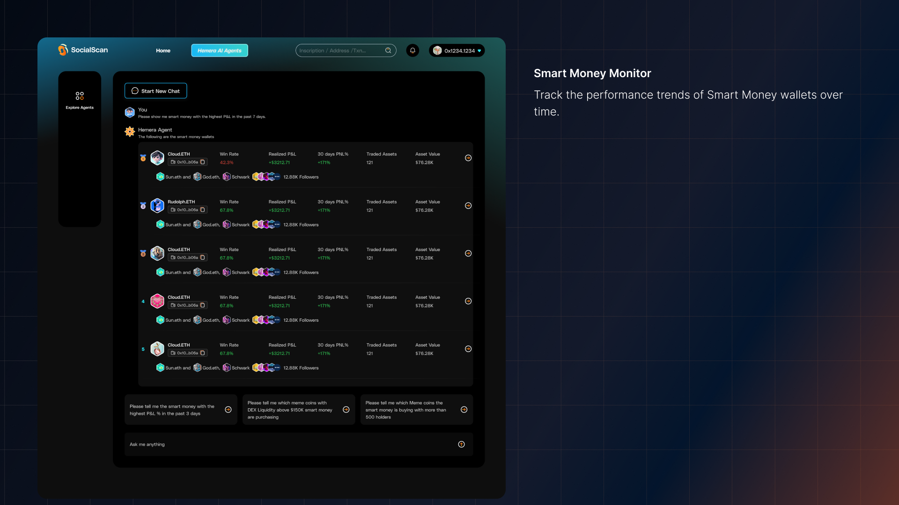
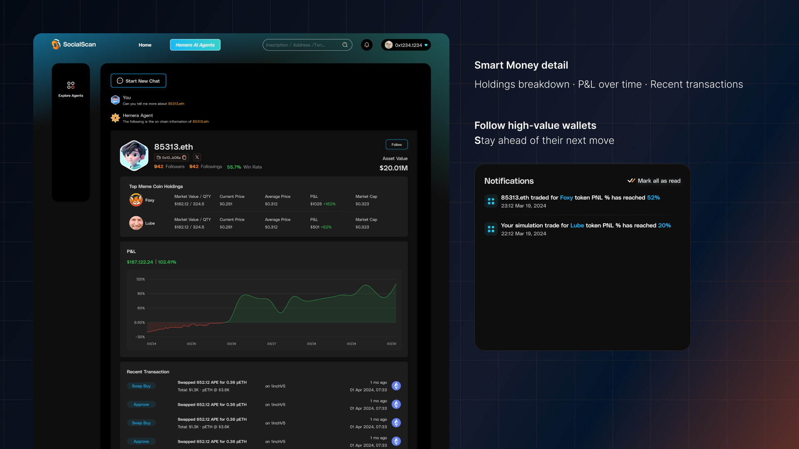
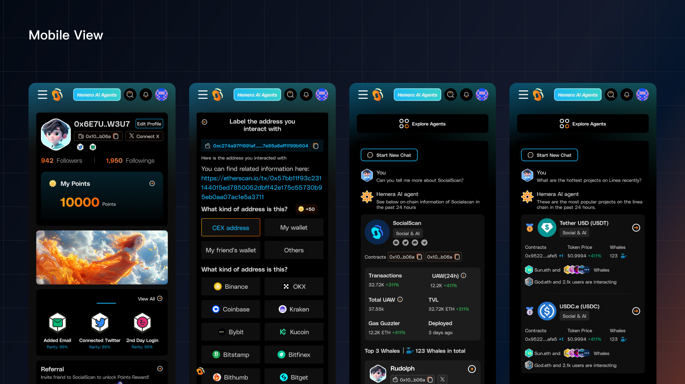

Problem
Web3 can be intimidating. On-chain data is scattered across chains and tools, making it difficult to find a starting point or understand what matters.
Solution
SocialScan brings on-chain discovery, community participation and Hemera AI Agents into one experience.
Visual Language
Light in the Dark
A dark foundation anchors the interface, while cyan and orange highlight actions, rewards and key information.

Product
Points System
Referral onboarding, daily check-ins and address-labeling tasks connect to a points economy, bringing participation and recognition into one place.

Hemera AI Agent
An agent experience powered by on-chain data, bringing guided prompts and detailed information into the same interface.
Meme Coin Trading Agent
Explore market signals, project details and Smart Money activity through a connected set of views.





Mobile View
The core experience adapts to a single-column layout on mobile, retaining the same visual language and interaction patterns.
